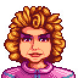
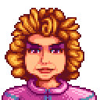

Vila Pelicanos
Vila Pelicanos é para onde você se move no início do jogo, localizado em Stardew Valley, é onde a maioria dos moradores vive, trabalha e socializa.
Lewis é o prefeito da Vila Pelicanos e tem sido por muitos anos, ele comenta que ele não teve concorrência para o papel desde que se tornou prefeito.
Conheça os habitantes da vila:


 
